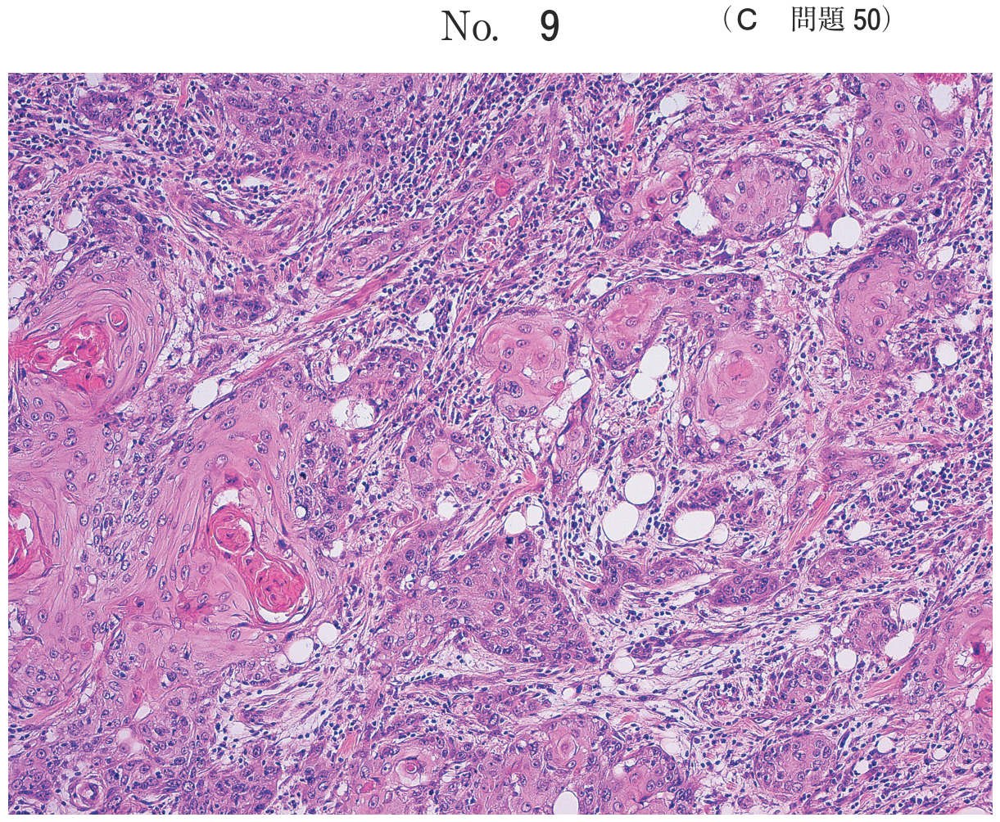
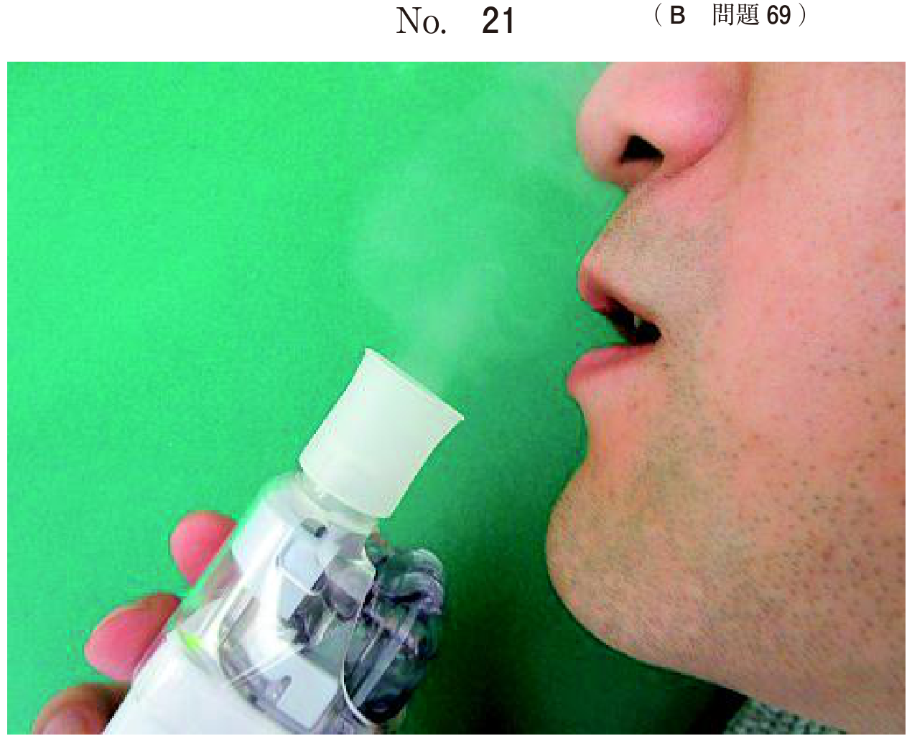

乳歯の感染根管治療
概要
乳歯の歯髄壊死や根尖性歯周炎に対して行う根管治療。乳歯特有の解剖学的特徴と後継永久歯への影響を考慮する必要がある。
後継永久歯への影響（頻出）
- 位置異常（萌出位置の異常）
- エナメル質形成不全（ターナー歯）
- 萌出遅延・萌出障害
ターナー歯（Turner歯）
先行乳歯の根尖病変（重度の齲蝕、外傷など）により、後継永久歯のエナメル質形成が障害されたもの。
- 原因：先行乳歯の根尖病変、幼児期の外傷
- 好発：前歯部、小臼歯部（乳臼歯の根尖病変による）
- 所見：エナメル質の白斑、褐色変色、形成不全
乳歯と永久歯の歯内療法の違い（頻出）
| 手技 | 乳歯 | 永久歯 |
|---|---|---|
| インピーダンス測定 | 同じ | 同じ |
| 根管長測定 | 同じ | 同じ |
| 根管拡大 | 同じ | 同じ |
| 根管形成 | 行わない（根管壁が薄い） | 行う |
| 根管充填 | 吸収性糊剤（ヨードホルム） | ガッタパーチャ |
根管充填の領域
- 乳歯の根管充填は根尖まで（根尖を超えない）
- 吸収性糊剤を使用（後継永久歯の萌出を妨げない）
- 根管形成は行わない（根管壁が薄いため穿孔のリスク）
過去問
6歳の男児。右側の下顎乳臼歯部の咬合痛を主訴として来院した。初診時の口腔内写真（別冊No.13A）とエックス線写真（別冊No.13B）を別に示す。そのままにした場合、後継永久歯への影響で考えられるのはどれか。2つ選べ。


b 位置異常
c 歯髄腔狭窄
d 象牙質形成不全
e エナメル質形成不全
【解説】乳歯の根尖病変を放置すると後継永久歯に位置異常とエナメル質形成不全（ターナー歯）が生じる。歯髄壊死・歯髄腔狭窄は永久歯自体の問題であり、先行乳歯の影響ではない。
11歳の男児。上顎右側第一小臼歯の変色を主訴として来院した。初診時の口腔内写真（別冊No.29A）とエックス線画像（別冊No.29B）を別に示す。原因として考えられるのはどれか。1つ選べ。


b 先天性梅毒
c 先行乳歯の根尖病変
d フッ化物の過剰摂取
e エナメル質形成不全症
【解説】小臼歯のエナメル質形成不全（ターナー歯）は先行乳歯の根尖病変が原因。先天性梅毒はハッチンソン歯（切歯）やムーン歯・フルニエ歯（第一大臼歯）。
6歳の男児。歯の変色を主訴として来院した。全身状態に問題はない。初診時の口腔内写真（別冊No.19）を別に示す。原因として考えられるのはどれか。2つ選べ。

b 幼児期の外傷
c 抗菌薬の長期服用
d 先行乳歯の重度の齲蝕
e 妊娠期の母体の栄養不良
【解説】永久前歯のエナメル質形成不全（ターナー歯）の原因は幼児期の外傷と先行乳歯の重度の齲蝕（根尖病変）。抗菌薬（テトラサイクリン）は帯状の変色を呈する。
根安定期の乳歯と根完成永久歯の歯内療法の手技において異なるのはどれか。2つ選べ。
b 根管長測定
c 根管拡大
d 根管形成
e 根管充塡
【解説】乳歯と永久歯で異なるのは根管形成（乳歯は行わない）と根管充填（乳歯は吸収性糊剤、永久歯はガッタパーチャ）。インピーダンス測定、根管長測定、根管拡大は同様に行う。
根管拡大後の下顎乳臼歯の模式図を示す。根管充塡領域で適切なのはどれか。1つ選べ。

b イまで
c ウまで
d エまで
e オまで
【解説】乳歯の根管充填は根尖まで（根尖を超えない）。根尖を超えると後継永久歯歯胚に影響を与える可能性がある。